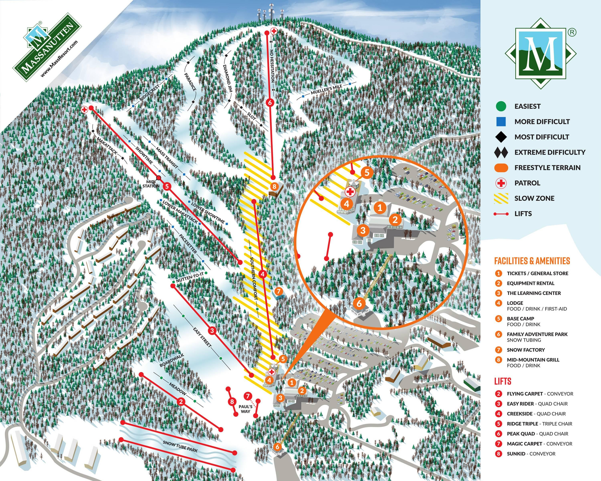

Massanutten Resort

Map of Massanutten's trails
Overview
Massanutten is the mountain where I and a lot of my friends learned to snowboard. It is extremely beginner friendly while still being a fun mountain to ride as an intermediate if you're looking for a good time. None of the blue trails are overly challenging and the black trail can still be fun even to intermediates. The lodge is also a good time where they usually have live music and decent food.
Tips
- The terrain park is relatively small but there are some fun jumps and features at the upper area.
- On days where it snows the resort can get extremely crowded. Parking may be limited.
- Massanutten is a beginner/intermediate friendly mountain. Don't expect extremely challenging trails.
- If the weather has been poor, expect icy conditions.
For more information: Massanutten official website